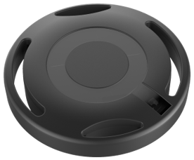

Quuppa Tag Design Principles
The Quuppa Intelligent Locating System™ is able to track any Bluetooth® device from Bluetooth 4.0 onwards, including but not limited to Quuppa's own reference tags and Quuppa Approved Partner Tags. When developing Quuppa trackable tags, it is important to apply certain design principles to the tag design, to ensure that they can provide good performance when used together with the Quuppa system. The aim of this document is to take a deep-dive into the details of these design principles.

Table of Contents
1. How to Make Bluetooth Devices Trackable in the Quuppa system
2. Quuppa Approved Tags vs Quuppa Tested Devices
3. Firmware & State Machine Logic
5. Accelerometer & Other Components
1. How to Make Bluetooth Devices Trackable in the Quuppa system
Any Bluetooth device from Bluetooth 4.0 onwards can be made Quuppa trackable by enabling the device to advertise Quuppa Profiles. There are effectively specific advertisement payloads, or Direction Finding packets, that make the device 'visible' to the Quuppa Locators.
2. Quuppa Approved Tags vs Quuppa Tested Devices
Quuppa Approved Tags
Quuppa v3 protocol and firmware
Quuppa v3 protocol is an enhanced version of the wireless communication protocol between Quuppa Locators and Tags. Quuppa provides Quuppa v3 firmware source code, tools and services to Quuppa partners enabling them to design, develop and verify Quuppa v3 Approved tags. As the outcome of the process, Quuppa partner tags can be qualified as Quuppa Approved tags guaranteeing high quality and performance as parts of Quuppa RTLS solutions. Additionally, Quuppa Approved tags support native Quuppa system features, and the latest and upcoming system features are available primarily for the Quuppa v3 tags with the latest firmware revision.
Currently, Quuppa v3 source code is available for Silicon Labs BG22 and Nordic Semiconductors nRF52832 radio System-on-Chips (SoC). The porting of the source code for other radio SoCs is also possible and a subject under evaluation and development with Quuppa partners. Quuppa v3 tags are compatible with the Q generation locators, and Quuppa System Release 8.0 and newer.
The previous generation of Quuppa Approved tags are based on Quuppa Firmware Libraries (for Nordic nRF52832/833/840). These tags have the native support of Quuppa System features together with Quuppa Locators, Quuppa Site Planner (QSP), Quuppa Positioning Engine (QPE) and other proprietary software tools. However, Quuppa Firmware Libraries are not anymore available for new designs and naturally they don’t support the latest Quuppa v3 features.
Quuppa Tested Devices
Quuppa Tested Devices is a certification category that is reserved for devices which are typically designed for some other purposes than positioning. The category itself is not exclusive by nature of the device. The key requirement for devices in this category is to have a radio that can transmit Quuppa Direction Finding packets (as specified in Quuppa Emulation Specification) at least on one of the Quuppa tracking channels.
Quuppa Emulation Specification enables device manufacturers to program their devices to advertise Direction Finding packets (uplink), send data packets (uplink), and use backchannel functionalities (downlink) to command devices. In addition, Quuppa offers sample source code for a reference mobile app, both for Android and iOS, to make them trackable.
As mentioned, the transmission of Direction Finding packets make a tag or device visible to the Quuppa System. However, there are many other factors that affect the tracking performance of a tag (e.g. the antenna, state machine and accelerometer), which will be explored in the next sections.3. Firmware & State Machine Logic
State Machine Makes Systems Scalable
Quuppa's tag firmware implements state machine logic that controls how it operates. The state machine has several important functions, but first and foremost it listens to the accelerometer data to control tag's advertisement on one hand to save battery for that given tag, and on the other hand to decrease unnecessary Bluetooth congestion in environments with tens of thousands of tags (e.g. warehouse).
Quuppa Approved tags have a state machine built-in. For the Tested Devices implementing the Emulation specification, the manufacturer has to develop their own firmware and state machine logic. This state machine logic may well be either simpler or more complicated than what has been implemented in the Quuppa v3 firmware. In asset tracking use cases with high volumes of tags residing in the same environment, it's important that state machines command static tags to lower their transmit intervals to minimise unnecessary radio noise.
4. Antenna
Positioning Accuracy and Confidence Start With Good Antenna Design
The tag's antenna is one of the most important hardware components for achieving optimal performance together with the Quuppa system.
Quuppa's positioning methodology is based on Angle-of-Arrival (AoA), meaning that the Quuppa Locators measure the direction of the radio signal received from a tag. This is why it is crucial that the radiation pattern of the antenna is as omnidirectional as possible and that there are no significant (i.e. no deep nor wide) nulls.
Printed IFA for Omnidirectional RadiationQuuppa recommends using a PCB antenna, e.g. a printed IFA antenna. Changing the thickness of or the material used for the PCB will require a redesign of the antenna dimensions or matching circuit. Some high relative permittivity enclosure materials also require a redesign.
The use of a ceramic chip antenna is not recommended as they produce radiation patterns with significant nulls. However, if a ceramic chip antenna is the only option, antennas with the shortest electrical length should be avoided.
Good Total Efficiency Helps
Quuppa tags can operate within the whole 2.4 GHz ISM band: from 2401 MHz up to 2481 MHz, with 1 MHz spacing. The antenna and matching circuitry should be designed so that the antenna performance is good throughout the band. We recommend using a 50 ohm matching plane for easier measurement of the antenna matching.
While a Quuppa tag benefits from good total efficiency of the antenna, it is secondary to antenna radiation. The target for total efficiency (includes both the matching loss and the radiation efficiency) for the whole frequency range is better than -5dB.
As always, you also need to take the antenna placement into consideration and make sure you design it properly, also taking into account keep-out areas on the PCB, ground plate, enclosure etc.
Simulate Before Production
It's highly recommended to model and simulate the antenna performance before production. It is important for catching any design challenges early. It is also equally important to simulate and measure the efficiency and radiation pattern of the final antenna design inside the intended enclosure, instead of only in free space, as the enclosure can also affect antenna performance. The matching (reflection coefficient) should be measured first, before any efficiency and radiation pattern measurements are taken.
Challenges With Non-Optimal Antenna Design
Omni-directionality for Positioning Accuracy and Confidence
The tag is a small and simple radio transmitting device. It's fairly easy to manufacture, and there are plenty of reference designs available online. However, when creating a tag for an AoA positioning system, antenna design is critical for the overall system performance.
In Quuppa's case, Locators are like cameras, in that they take small radio images of radio signals that they see. From these images, the Locator measures the azimuth and elevation angles and the QPE converts those into x-, y-, and z-coordinates. If the strongest radio signals that Locators receive are not coming directly from the tag (but from a reflection), it can cause a significant reduction in the positioning performance of the system. This typically happens when the antenna does not radiate to all directions with the same power, but the radiated power is weaker to specific direction. The picture below shows the difference between omnidirectional antenna-radiation patterns of the correctly positioned black tag, and the green tag with a deep and wide null in radiation pattern towards the Locator, resulting in its wrongly computed position visualised as a red dot in the picture.5. Accelerometer & Other Components
An Accelerometer is a Must
As mentioned above, the accelerometer has a crucial role not just from an individual tags perspective but also from overall system performance perspective. For Quuppa, having an accelerometer is a mandatory requirement.
Beyond the system logic, an accelerometer also has a key role in several use cases (e.g. man-down, impact detection, movement analysis). Tag manufacturers have the freedom to choose the accelerometer that they want to use, they just have to write the drivers for themselves. The Quuppa Firmware has readily written drivers for ST LIS2DH and LIS2DW.Sensors as Use Case Enablers
Quuppa tags also typically have other sensors and actuators, such as a push button and an LED indicator, to address and complement a variety of use cases.
Different sensors and actuators consume different amounts of energy. Having a vibrator motor or buzzer that can be commanded with the backchannel (downlink) via the Locators enables fantastic use cases, but they also tend to be very power hungry and hence require some smart design choices from the manufacturer's side.6. Quuppa Proprietary Channels
Interference Tolerance on Non-Standard Channels
The Quuppa System is able to track a tag on the standard Bluetooth advertising channels, as well as at the edges of the 2.4GHz ISM band. Tags with Quuppa v3 firmware allow a proprietary operation mode for tracking Quuppa Compatible Tags using the Quuppa proprietary channels (primary: 2481 MHz, and auxiliary channels: 2401 MHz, 2403 MHz,). The benefit of this is that these proprietary channels are free from other standard wireless systems, including WiFi, and Bluetooth. Note that some of the Quuppa Tested Devices (e.g. the mobile handsets) can only operate on standard Bluetooth advertising channels.
Using the proprietary channels becomes especially important in environments where fast location update rates are required and/or Bluetooth channels are crowded, such as sport stadiums and exhibitions (i.e. areas where large numbers of people carry smartphones and headsets).
Radio Certifications Compliance is the Vendors' Responsibility
From a tag manufacturer's point of view, it is important to acknowledge that when a tag operates on the proprietary channels, the tag's radio certifications must also cover the use of said channels. It's worth noting that there are some country-to-country differences and limitations to operations on different radio frequencies. It is the manufacturer's responsibility to ensure that tag complies with the rules and regulations of the geographical markets where the tags are used in and sold to.
7. Mechanical Design
The saying "form follows function" also holds true in asset tracking tags. The sensors and actuators are defined by use cases that the tag is used for. In the same manner, the type of the tracked entity (i.e. a person, pallet, vehicle, or small asset) sets requirements for the tags size, shape, robustness and its suitable mounting mechanisms. Most enclosure and mechanics design choices are fairly logical and follow common sense.
In the Quuppa Certification process, we test the mechanical functionalities (e.g. buttons, plugs, locking systems, hinges etc) so that they work as specified by the manufacturer. We also evaluate the materials and surface quality (i.e. visual quality), shape of the product (e.g. no sharp edges, pinch points etc), wearing endurance of the product and check that it should not make any unusual noises when pressing or twisting.
By no means the list is exhaustive, but the use case, usage environment, the customer, or even related regulations and other requirements may impose material, functional, size, or other qualities that a tag has to fulfill. These requirements are at the manufacturer's and/or user's responsibility.8. Privacy and Cybersecurity
Governments worldwide are introducing regulation related to privacy and cybersecurity. When designing and selling your device, make sure you are aware of the relevant regulations for its intended use and target market. Compliance with the local regulations is the responsibility of the vendor.